Time Series
A set of measurements taken over time.
Contents
Trend Components of Time Series
- Seasonal components are short-term patterns
- Cyclical components are long-term patterns
- Irregular components are noisy, unpredicatable patterns
Smoothing Methods
Smoothing methods remove noise from data by averaging time surrounding each section of the time series. The result of this is a smoother curve that allows a better holistic sense of how the time series is trending. Some types of smoothing methods will be outlined below.
Simple Moving Average
Simple moving averages are calculated using arithmetic means and can differ based on how long a period is set to be during calculation. Calculating a simple moving average is first done by deciding on the number of periods to consider when calculating. After that, sum the number of observations decided on and divide that sum by the number of periods chosen. Do this for each point, moving over one at a time. As an example, for five observations, take the first five, sum them and divide by five. That is the first moving average calculation. Then perform the same operation for the rest of the points, the next one being the sum of observations 2-6 and dividing that by five. Plotting all of these points will give you a more smooth line. A formulaic description is taken below for the first two steps listed.
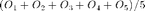
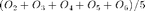
Exponential Moving Average
Exponential moving averages have a similar purpose to simple moving averages but operate differently. This type of moving average gives more weight to more recent values. The first step in calculating an exponential movsing average is choosing a smoothing coefficient between zero and one. The reason why choosing a coefficient is important is that there is a tradeoff between smoothing and forecasting ability. A lower coefficient will make a smoother moving average but will be less accurate in a forecast, while the opposite is true for a higher value. When calculating the moving average, the first point will simply be the first observation. The subsequent observations will be the smoothing coefficient (W) multiplied by the observation, then to more heavily weight recent observations, add the quantity of one minus the coefficient multiplied by the last calculated point.

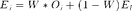
Linear Trend Model
The most simple trend model, using a y-intercept, coefficient, and independent variable to predict the dependent variable. Time is typically the independent variable and each period is an increase of one, starting at zero, known as coded time. To forecast a point, simply input the coded time value in for X, knowing the coefficient and y-intercept. Use this model if the differences between the data are approximately constant. The model is indicated by:
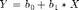
Quadtratic Trend Model
Functions the same way as the linear trend model, but is non-linear in its characteristics, having a squared variable. The purpose of the quadratic model is to possibly get a better fit to the time series by utilizing a curve instead of a line. Use if the second differences in the time series data are approximately constant.
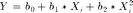
Exponential Trend Model
MATLAB® Toys R Us® Seasonal Sales Exponential Time Series Example
Again, same idea as the previous two trend models, but with a twist. Since this model is exponential, result will either be the logarithm of the dependent variable or the exponent on the coefficient will be the input for the independent variable. Both examples are shown below. The coefficient minus one, multiplied by 100% is the estimated compound growth. Use when the percentage differences in the time series data are approximately linear.
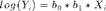
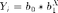
Autoregressive Trend Model
This model creates lag, essentially stating with an intercept and then creating a number of variables, each one time period lower than the previous. By estimating the coefficients of this model, the relations between the variables can be more easily shown. The first step is to choose the number of time periods to lag, known as p, then calculate the regression with the new variables. An example is shown below, note that due to LaTeX limitations, the Y components should have subscripts i-1, i-2, etc.
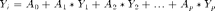
Seasonality
The seasonal model follows the idea of the exponential model, but with more variables, which each account for time periods. Typically this is seen for fiscal quarters, in which case the process would be the same as solving an exponential trend model, but with the variables below, where Q a dummy variable is for quarters one through three and the fourth quarter is assumed by the model for instances where Q1-Q3 all equal zero. The b2-b4 coefficients are predictors of quarterly metrics relative to the four quarter, b0 is the y-intercept and b1 is the multiplier for coded time.
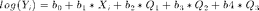
Time Series Heuristics
- When two models provide a good fit, go with the simpler one.
- Choose the model with the smallest measuring error.
- Examine residuals to eliminate models with patterns or trends.
- Don't assume that the correlations shown by the model continue indefinitely
- Don't forget that volatility of the estimate increases due to unforecasted and unforeseen events.
How To Solve These Using SPSS
Click here for an SPSS example using the Toys R Us Excel data in the K-Drive
Load in the data you wish to use, keep in mind that if you are doing seasonal data, you need to enter the quarters or time periods as dummy variables and that exponential models should be solved for the logarithm of the dependent variable and then raise ten by their powers to finish solving for the curve.
It becomes very straightforward from here, simply go to Analyze -> Regression -> Linear.
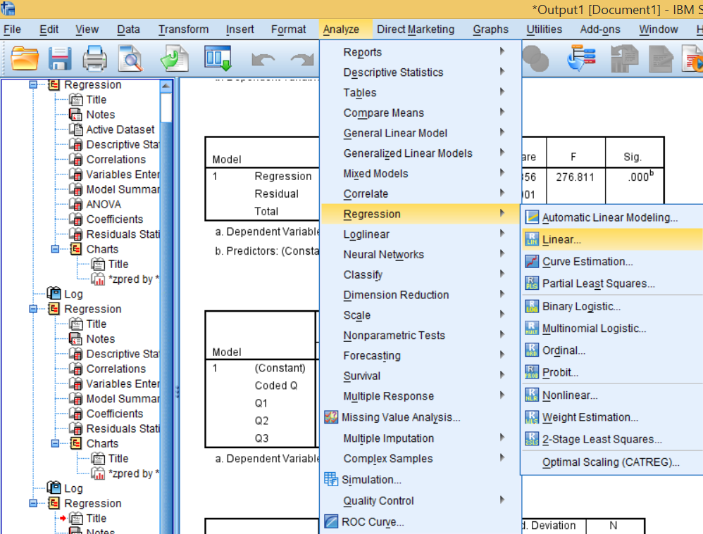
Enter your dependent variable in the appropriate box and all the independents likewise. Opt for any statistics that you would like, but the most useful are the R-squared values under model fit in the statistics panel, and the coefficients, which should come with the linear model.
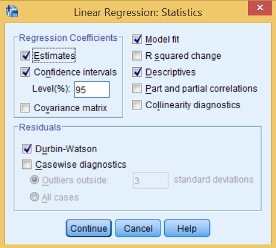
All other options can be chosen at your discretion. The standardized coefficients are your main focus, those are multiplied by the independent variables to fit the model to the data (don't forget to change them back from their logarithmic state if applicable). Also confirm that the p-values are less than your confidence level. Lastly, check the R-squared to make sure that the model is a good representation of your data.